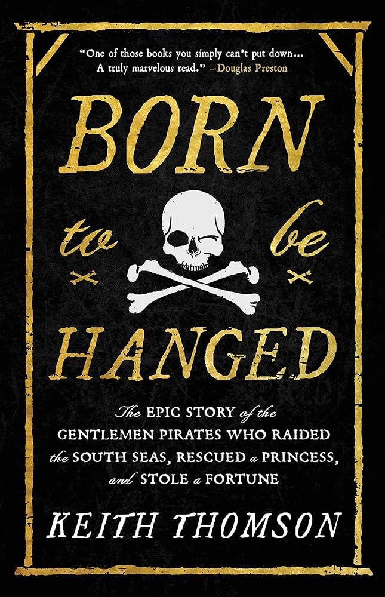

Born to Be Hanged is a historical novel by Keith Thomson, based on the true story of Basil Ringrose...
Thematic Statement
The pursuit of adventure and fortune can lead to unexpected and dangerous consequences.
Supporting Quotes
- Quote 1: "On that day, April 21, it is likely they were among the passengers in his canoe who spotted another Spanish baroque and 'instantly gave chase.' (Chapter 23: page 203) - This quote illustrates how the pursuit of adventure led to immediate action, which could result in dangerous consequences.
- Quote 2: "All of a sudden, Cox, Povey, and the remaining buccaneers were out of options save turning back to the river and running for their lives."(chapter 15: page 124) - This quote emphasizes the unexpected and dangerous situations faced by adventurers.
- Quote 3: "After surviving a scare when the attorney accidentally snapped the Trinity anchor cable and flung the ship onto the shore, which, luckily for them, was flooded."(Chapter 11, page 93) - This quote highlights the element of luck and unpredictability in their pursuits.